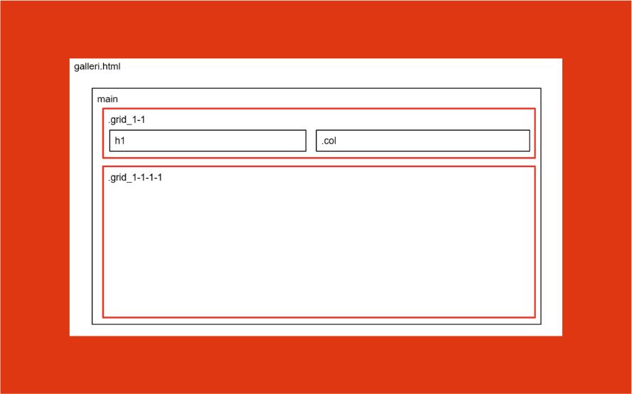

GRUNDLÆGGENDE WEB
Jeg lærte om grundlæggende html og css. Vi udforskede emner som responsivt design, herunder media queries, brug af grid og flexbox, håndtering af farver og ændring af typografien i css."

Jeg lærte om grundlæggende html og css. Vi udforskede emner som responsivt design, herunder media queries, brug af grid og flexbox, håndtering af farver og ændring af typografien i css."
